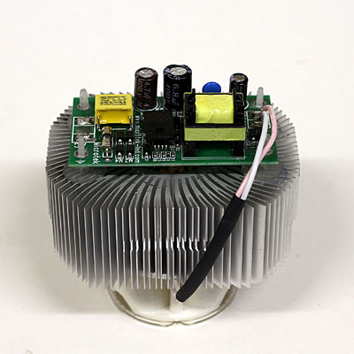
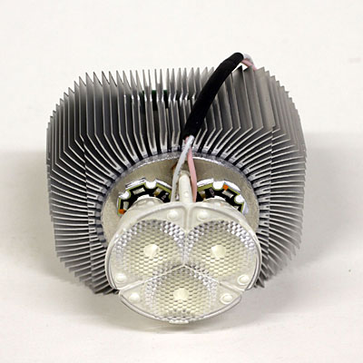
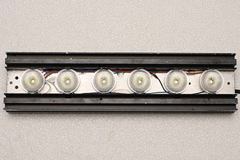
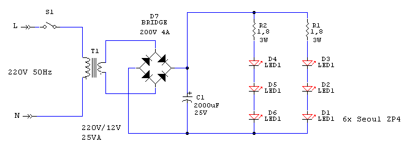
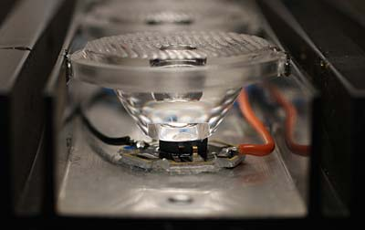
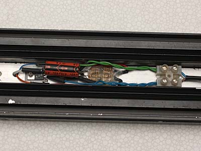
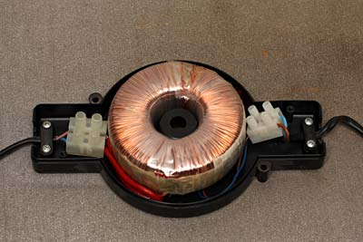
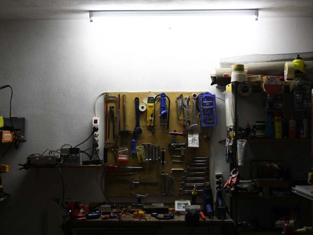
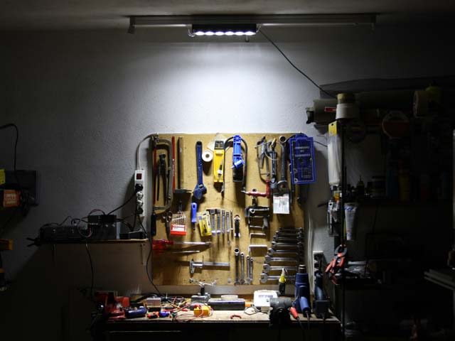

LED & illuminazione
Lampada 220V con 6 LED Seoul ZP4
e altre applicazioni dei led con il 220V "Fai da te" di R.Chirio
Indice della pagina


Esempio con alimentatore 220V 10W, adatto per 3 x led P4
Settembre 2008
Con i Power Led non si fanno solo lampade per biciclette....
Con un po’ di attenzione (verso il 220V) non è difficile realizzare una efficiente lampada a led in grado di sostituire efficacemente un tubo Neon 220V da 36W.
Per comodità di prova si è utilizzato un profilato dissipatore lungo solo 35cm, consiglio di sviluppare il progetto su una lamiera di alluminio spessore 2-3mm lunga 120cm e larga 15cm con due pieghe da 30°, per meglio simulare la forma di una plafoniera a neon e dare una buona dissipazione per i led.
I led P4 vengono fissati sull'alluminio dissipatore, per utilizzare il 12V e non sprecare energia in regolazione serie, bisogna mettere tre led in serie, quindi per una buona distribuzione di luce due gruppi da tre led, sono ottimali, anche per la potenza assorbita che diventa circa 20W.
I led da soli hanno un campo di uscita di 120°, che diventa troppo dispersivo per illuminare un piano di lavoro, utilizzeremo pertanto delle lenti da 25° che concentrano bene il flusso senza senza chiuderlo troppo.
La distanza ottimale tra la lampada e il piano di lavoro è di 1,5 - 1,8mt.
Questa soluzione con 6 led P4 risulta valida anche per illuminare acquari, si possono usare i led direttamente senza lenti.
La costruzione della lampada led 220V comporta avere delle buone conoscenze di elettronica,
è necessaria un'attrezzatura ed esperienza nei montaggi elettronici.
E chiare competenze nell'uso dei dispositivi a 220V.
Non si risponde per danni a cose e persone e per un uso improprio della realizzazione.

6 Led Seoul Zp4 montati su un radiatore. Davanti ai led vengono posizionate le lenti da 25°.
Con questo radiatore a regime si raggiungono i 35°C, ottimali per il funzionamento dei led.
Schema elettrico

Lo schema è semplice, in quanto viene usato un trasformatore 220V/12V da 30-50VA. A seguire un ponte diodi raddrizzante filtrato da un condensatore elettrolitico.
La regolazione di corrente necessaria ai led viene ottenuta da una resistenza serie al gruppo dei 3 led.
Il valore della resistenza consigliato è di 1,8 Ohm 3W, però in base al trasformatore usato è bene misurare la corrente di ogni singolo ramo per non superare i 0,9 - 1,0 A per ogni ramo led. Se superiamo i 1000mA si rischia di bruciare facilmente i led.
Il condensatore si può anche evitare, avremo però una luce pulsante a 100 Hz, come avviene sui tubi al neon alimentati da ballast 50 Hz. In questo caso avremo una tensione più bassa, è importante misurare la corrente di ogni ramo led, magari con un amperometro a indice per avere il vero valore di corrente. (True RMS)
Con questa configurazione non effettuiamo la stabilizzazione di corrente, ma si è visto che se il 220V è stabile, non ci sono problemi di variazione di luce.
Realizzazione

I Led vengono fissati sul radiatore sia con viti che colla conduttiva termica.
Le lenti sono da 25° con 35mm di diametro per avere un buon rendimento ottico. Possono essere facilmente fissate con un po’ di colla all'interno di un foro di 34mm, magari su un lamierino di alluminio che scherma il resto della luce uscente dal led.
Per illuminare un campo più largo si possono anche usare le lenti da 40-45°.

Sulla parte posteriore del radiatore fisseremo il ponte diodi, il condensatore elettrolitico e le resistenze per regolare la corrente dei led.
Meglio usare resistenze corazzate in ceramica o in alluminio.
Il ponte diodi viene attraversato da 2A, tende quindi a scaldare, è meglio utilizzare un tipo che possa essere fissato tramite vite sul radiatore.

Il trasformatore toroidale, garantisce un buon isolamento tra ingresso e uscita. Usare solo componenti di buona qualità, omologati a norme.
Attenzione a non usare trasformatori elettronici ad alta frequenza, sono più piccoli e meno costosi, adatti solo per lampade alogene, per questa applicazione non è possibile usarli.

Banco da lavoro illuminato con tubo neon 36W senza plafoniera. Forte luce attorno e nelle vicinanze del tubo, sul piano da lavoro, non c'è più molta luce (200 Lux) anche se in pratica si può lavorare bene. In questo caso si può dire che molta della luce viene dispersa in tutto il locale, richiedendo per lavorare bene molta più luce di quanta sia necessaria solo sul piano di lavoro.
E' un semplice esempio di non ottimizzazione della resa luminosa con spreco di energia elettrica.

Lo stesso Banco da lavoro illuminato con i 6 Led 3,6W. Forte luce sul piano di lavoro e poca dispersione nel locale.
In questo caso siamo a 1000Lux sul piano lavoro, valore forse eccessiva per fare lavori comuni.
Pertanto si può effettuare un ulteriore buon risparmio energetico riducendo a soli tre il numero dei led accesi per una potenza assorbita dai led di 3,7 x3 pari a circa 10W. ottenendo ancora circa 500Lux sul piano di lavoro.
Oppure distribuire i 6 led su una maggiore lunghezza, così da illuminare una maggiore fetta del piano di lavoro.
L'esempio è molto semplice per capire quale sia la strada per effettuare ottimizzazione luminosa ed successivo risparmio energetico nell'ambiente casalingo.
Commenti
Con l'illuminazione Led si possono ottenere ottimi risultati sia luminosi che di risparmio energetico.
Il costo di tutto il gruppo può ritenersi basso, (inferiore ai 50 €) in funzione della qualità del materiale usato è da pensare un uso per oltre 20 anni.
Un buon progetto può portare a un risparmio del 60% di energia elettrica, migliorando la qualità dell'illuminazione.
L'applicazione va bene per uso domestico, ma può essere vantaggiosamente applicata anche in campo industriale dove gli spechi luminosi sono notevoli....
© Roberto Chirio: all rights reserved.